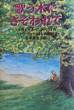

Det sjungande trädet

1994 |
Översättningar
|

Japanska |
Tyska |
Tyska |
|
"Han heter Lo och är tolv år. Han står ensam på en ö i Roslagens ytterskärgård. Året är 2700 f.Kr. I södra Roslagen ligger Wira Bruk. Här hittade arkeologerna år 1991 en krukskärva från stenåldern. Som alla skärvor från det förflutna har den en saga att berätta. Margareta lindberg förmedlar den sagan till oss och väcker vår äldsta historia till liv på ett dramatiskt, men ändå trovärdigt sätt. Det sjungande trädet är en Grottbjörnens folk för slukaråldern, men med historisk förankring i vår egen fascinerande förhistoria." Svensk Bokhandel nr.3 1994. Lämplig för mycket läsvana barn från 11 år och för vuxna. Boken finns på bibliotek och kan köpas från Adlibris. Illustrationer: Petra Wadström ISBN 91-1-937392-9. Utgiven av Norstedts 1994. |